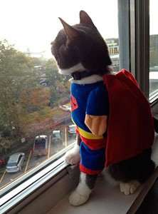

Datos personales
Brazilian Shorthair, tiene 4 años, desde pequeño era muy manso, pero si le tocabas la cola era capaz de causar heridas profundas. Es sociable y protector con su dueño. Su juguete favorito es una pelota de plástico con orejas y cola de ratón. Bastante eficaz en la cacería de plagas.
Angel
Cerca a mi barrio vive un superhéroe, un pequeño y feroz superhéroe, Angel. ¿Por qué digo que lo es? Bueno, comenzó hace apenas 2 años, cuando Angel empezó a frecuentar por los callejones que se encuentran cerca a mi casa. Por allí se pasan muchos otros animales callejeros, entre ratas, perros y, por supuesto, otros gatos. Por eso, cuando Angel se aparecía por allí, su pelaje resaltaba entre el oscuro y sucio del resto. A pesar de esa diferencia, me parecía que a Angel le gustaba más andar con la pandilla de gatos, que estar en su propia casa.
Sin embargo, yo, que lo veo todo por la ventana de mi apartamento (que da hacia el callejón), pude presenciar el momento exacto en el que Angel se convirtió en un superhéroe. Unos 10 minutos antes del momento, un par de perros callejeros empezaron a rodear a los gatos. Estuvieron en una persecución durante unos minutos antes de que yo me asomara por la ventana, atraído por el ruido. Un impulso me hizo saltar de mi silla, pero mientras me ponía los zapatos para ir a su rescate, Angel se abalanzó sobre los perros, no hiriéndolos, pero espantándolos. Aquella imagen se quedó en mi cabeza durante mucho tiempo, incluso haciéndome seguir a Angel hasta su casa para informarle a su dueño que su gato era un superhéroe. El joven me miró durante un momento y se echó a reír. Desde ese momento me llevo bien con su dueño, e incluso deja que me lo lleve a casa, cuya ventana le permite vigilar y proteger a sus amigos.
Fussy
Fussy es el nombre de mi gato. A menudo escapaba de casa, y descubrí que siempre se dirigía al parque que se encuentra cerca. Sin embargo, aún me preguntaba que era lo que hacía tanto tiempo allí, pues no se aparecía hasta el día siguiente. Leer más >>
Shadow
Shadow odia estar solo, tanto así que hace cosas muy curiosas cuando estoy trabajando. Ya que vivo solo, el pobre Shadow empieza a sentirse triste en una casa tan grande. Tras un largo día de trabajo, lo encontré en uno de mis zapatos. Leer más >>
Chloe & Jasper
Yo tengo un perro desde hace 5 años, Jasper. Un día, una amiga cercana me contó que se mudaría, pero que una compañera suya no podría ir con ella, su pequeña Chloe. Me conmovió mucho que la pequeña vaya a ir al refugio, así que la traje a casa. Leer más >>
Oliver
Mi gato es muy engreído, siempre quiere que lo acaricie, pero obviamente yo tengo muchas cosas que hacer, así que muy pocas veces lo complazco. Llegó el día en el que Oliver dejó de buscarme, en cambio, escuchaba unos ruidos provenientes de la cocina. Leer más >>